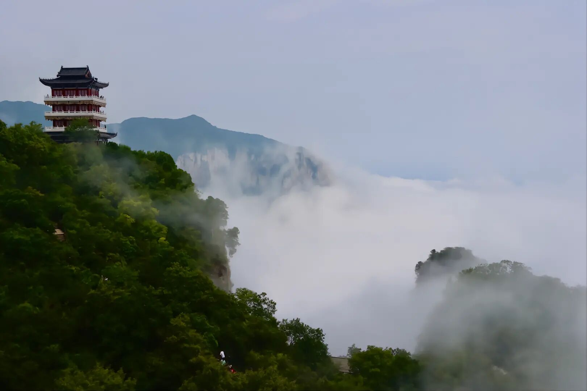

|
 云台山风景区，位于河南省焦作市修武县境内，地处郑州市西北70千米，总面积280平方千米，含红石峡、潭瀑峡、泉瀑峡、青龙峡、峰林峡、子房湖、茱萸峰、叠彩洞、猕猴谷、百家岩、万善寺等主要景点，是一处以太行山岳水景为特色，以峡谷类地质地貌景观和历史文化为内涵，集科学价值和美学价值于一身的科普生态旅游景区。景区因山势险峻，峰壑之间常年云锁雾绕而得名。云台山主峰茱萸峰海拔1308米，有落差314米的云台天瀑，在景区泉瀑峡的尽端，是中国发现的落差最大的瀑布之一。 |
|
2004年2月13日，云台山风景区被联合国教科文组织评选为全球首批世界地质公园。2007年5月8日，云台山风景区被批准为国家AAAAA级旅游景区。2014年1月，云台山风景区被列入资源型城市重点旅游区自然风光旅游项目。景区参加2022年2月16日-2022年3月31日的“豫见春天·惠游老家”活动，对游客实行首道门票免费。 |
|
云台山风景区 2004年2月13日，云台山风景区被联合国教科文组织评选为全球首批世界地质公园。2007年5月8日，云台山风景区被批准为国家AAAAA级旅游景区。2014年1月，云台山风景区被列入资源型城市重点旅游区自然风光旅游项目。景区参加2022年2月16日-2022年3月31日的“豫见春天·惠游老家”活动，对游客实行首道门票免费。 |
|
©底部版权页 ©© 2022－2023 |